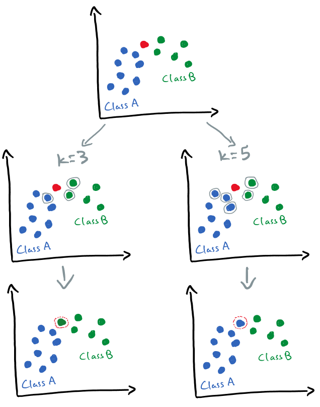
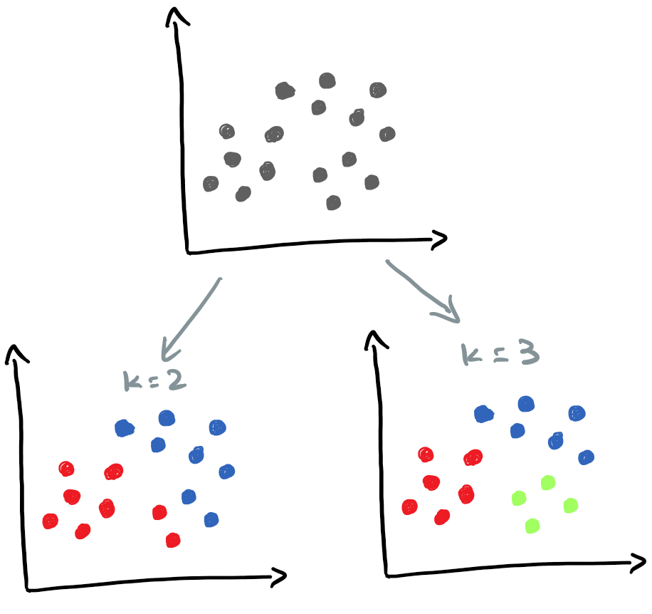

Introduction
In this post, we will go over two popular machine learning algorithms: K-Nearest Neighbors (aka KNN) and K-Means, and what K stands for in each algorithm. An overview of both popular ML techniques (including a visual illustration) will be provided.
By the end of this post, we will be able to answer the following questions:
- What’s the difference between KNN and K-Means?
- What does K mean in KNN and K-Means?
- What is a nonparametric model?
- What is a lazy learner model?
- What is within-cluster sum of squares, WCSS (aka intracluster inertia/distance, within-cluster variance)?
- How to determine the best value K in K-Means?
- What are pros and cons of KNN?
- What are pros and cons of K-Means?
👉 The goal of this post is not to compare KNN and K-Means as each one addresses a different problem. Hence, comparing them is like comparing apples to oranges.
K-Nearest Neighbor (KNN)
KNN is a nonparametric lazy supervised learning algorithm mostly used for classification problems. There are a lot to unpack there, but the two main properties of the K-NN that you need to know are:
- KNN is a nonparametric algorithm meaning that the model does not make any assumption regarding the distribution of the underlying data (see JavaTpoint N/A).
- KNN is a lazy learner technique meaning that the algorithm does not learn the discriminative function from the training dataset. Instead it stores (memorizes) the training dataset, so, technically, a lazy learner algorithm doesn’t have a training step, and it delays the data abstraction until it’s asked to make a prediction (see Raschka N/A).
What K in K-NN stands for?
K in K-Nearest Neighbors refers to the number of neighbors that one should take into consideration when predicting (voting for) the class of a new point. It will get more clear from the below example.
An Illustration of K-NN
As I mentioned earlier, KNN is a supervised learning technique, so we should have a labeled dataset. Let’s say we have two classes as can be seen in below image: Class A (blue points) and Class B (green points). A new data point (red) is given to us and we want to predict whether the new point belongs to Class A or Class B.
Let’s first try K = 3. In this case, we have to find the three closest data points (aka three nearest neighbors) to the new (red) data point. As can be seen from the left side, two of three closest neighbors belong to Class B (green) and one belongs to Class A (blue). So, we should assign the new point to Class B.

Now let’s set K = 5 (right side of above image). In this case, three out of the closest five points belong to Class A, so the new point should be classified as Class A. Unfortunately, there is no specific way of determining K, so we have to try a few values. Very low values of K like 1 or 2 may make the model very complex and sensitive to outliers. A common value for K is 5 (see JavaTpoint N/A).
Pros and Cons
Following are the advantages and drawbacks of KNN (see Point N/A):
Pros
- Useful for nonlinear data because KNN is a nonparametric algorithm.
- Can be used for both classification and regression problems, even though mostly used for classification.
Cons
- Difficult to choose K since there is no statistical way to determine that.
- Slow prediction for large datasets.
- Computationally expensive since it has to store all the training data (Lazy Learner).
- Sensitive to non-normalized dataset.
- Sensitive to presence of irrelevant features.
K-Means
K-Means (aka K-Means clustering) is an unsupervised learning algorithm that divide unlabeled data into different groups (or clusters). K in K-means refers to the number of clusters/groups (a cluster is a group of similar observations/records). For instance, in the following example, the unlabeled dataset is grouped into different number of clusters depending on the value of K.

K-Means minimizes the within-cluster sum of squares, WCSS (aka intracluster inertia/distance, within-cluster variance). To put it simply, K-Means minimizes the sum of squared differences between data points and the mean of the assigned cluster (see Helm 2021-06-01).
\text{WCSS}_{k} = \sum\limits_{x \in k}||x - \overline{x}||^{2}
How to find the best K?
There are several ways to determine K in the K-Means clustering algorithm:
- Elbow Method: A common way to determine the number of ideal cluster (K) in K-means. In this approach, we run the K-means with several candidates and calculate the WCSS. The best K is selected based on a trade-off between the model complexity (overfitting) and the WCSS.
- Silhouette Score: A score between -1 and 1 measuring the similarity among points of a cluster and comparing that with other clusters. A score of -1 indicates that a point is in the wrong cluster, whereas a score of 1 indicates that the point is in the right cluster (see Helm 2021-06-01).
- gap statistics: A method to estimate the number of clusters in a dataset. gap statistic compares the change in the within-cluster variation of output of any clustering technique with an expected reference null distribution (see Tibshirani, Walther, and Hastie 2001).
We usually normalize/standardize continuous variables in the data preprocessing stage in order to avoid variables with much larger values dominating any modeling or analysis process (see Bruce and Bruce 2017).
Pros and Cons
Some pros and cons of K-Means are given below.
Pros
- High scalability since most of calculations can be run in parallel.
Cons
- The outliers can skew the centroids of clusters.
- Poor performance in higher dimensional.
Conclusion
Few takeaways from this post:
- KNN is a supervised learning algorithm mainly used for classification problems, whereas K-Means (aka K-means clustering) is an unsupervised learning algorithm.
- K in K-Means refers to the number of clusters, whereas K in KNN is the number of nearest neighbors (based on the chosen distance metric).
- K in KNN is determined by comparing the performance of algorithm using different values for K.
- There are few ways to determine the number of groups/clusters in a dataset prior to the K-means clustering, and that are:
- Elbow Method,
- Silhouette Score,
- gap statistic.
References
Citation
@online{alizadeh2022,
author = {Esmaeil Alizadeh},
title = {What {K} Is in {KNN} and {K-Means}},
date = {2022-03-21},
url = {https://new.ealizadeh.com/blog/knn-and-kmeans},
langid = {en}
}